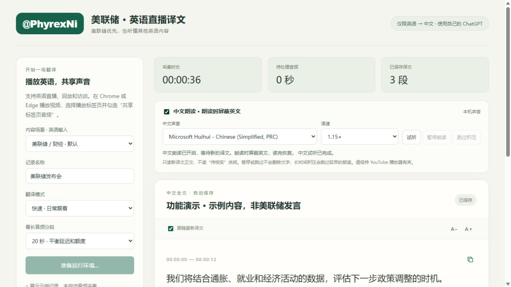

专业术语
覆盖美联储、宏观、金融、通胀和劳动力市场，可自行补充。
美联储优先，也支持其他英语直播、回放和访谈。
选择 ChatGPT、Grok、Google Gemini、Claude API 或 DeepSeek API。
中文朗读时屏蔽英文外放。
Windows 10 / 11 x64，或 macOS 14+ · Chrome / Edge · 仅英语 → 中文
Mac 芯片可在苹果菜单“关于本机”查看。完整包内含本机组件。Claude 和 DeepSeek API 需用户自己的密钥，按各自 API 额度或账单独立计费。尚未上架扩展商店。
覆盖美联储、宏观、金融、通胀和劳动力市场，可自行补充。
本机中文声音，可调语速、暂停和跳过。每段仍可独立复制。
中文记录自动保存在本机，可导出文稿和字幕。

Windows 使用支持 7z 的工具，例如 7-Zip；Mac 双击 ZIP 解压。将整个目录放到固定位置，不要直接在压缩包里运行。
Windows 双击 Install-Connector.cmd；Mac 双击 Install-Connector.command。只为当前用户注册本机连接。
Chrome 地址栏输入 chrome://extensions；Edge 输入 edge://extensions。打开“开发者模式”，选择“加载已解压的扩展程序”，选中解压目录里的 extension 文件夹。
打开扩展，选择 ChatGPT、Grok、Google Gemini、Claude API 或 DeepSeek API。前三家使用各自账号；Claude 和 DeepSeek 使用自己的 API 密钥并独立计费，密钥仅保留在运行中的本机组件内存，切换 AI 或关闭组件后需要重新输入。ChatGPT 需有 Codex 权限，Grok 需有 Build 权限；不会自动换用其他 AI。
选择正在播放视频的标签页，并勾选“共享标签页音频”。结束时点“结束采集并保存”，等待译文完成后导出。
DeepSeek 使用用户自己的 API 密钥，按 API 额度或账单独立计费。输入密钥不触发付费测试；翻译请求和模型思考输出可能产生 API 用量。识别出的英文与必要上下文会发送给 DeepSeek；密钥仅保留在本机组件运行内存，切换 AI 或重启后需重新输入。
保留七组按当前片段匹配的用法提示，区分增长放缓、温和增长、通胀放缓、通缩、劳动力市场、基点、PCE 与统计口径。通用英语模式不变，不增加翻译请求次数；提示增加少量输入文本。不承诺新的延迟改善。
ChatGPT 提前准备连接并逐字显示中文预览，页面只更新变化的段落。保留原识别模型、专业词库与翻译上下文；完成并校验后才可复制、朗读和导出。
Windows 的兼容 NVIDIA 显卡可选加速本机识别：先停止组件，再运行 Enable-GPU.cmd。首次按需下载约 1.1 GB，需至少 4 GB 可用空间。安装器不改系统驱动，兼容性检查未通过时不下载。Mac 本次继续使用 CPU。
减少程序等待不等于零延迟。音频分段、网络和所选 AI 的响应仍会影响速度。
选择本机中文声音和语速，点击试听。没有中文声音时，可先安装系统中文语音；文字翻译仍可使用。
共享播放标签页的音频。中文朗读时屏蔽英文外放，读完或暂停后恢复，英文识别继续进行。
不读时间戳、核实说明或历史记录。积压过多会跳过较早的朗读，文字仍保留。朗读使用本机语音，不增加配音 API 或 Codex 请求。
中文需要等待识别与翻译，不是零延迟同传。不同浏览器和系统声音表现仍需公开测试。
Windows 和两种 Mac 完整包须通过原生组件与重新解压检查。DeepSeek 和 Claude API 的离线检查使用模拟响应；真实 DeepSeek API 密钥、账单、译文与速度尚未实测；Mac 浏览器朗读、不同系统中文声音及长时间真实直播仍需试用。
译文有分段等待，数字和政策措辞可能存在识别错误。标记“待核实”的内容请结合原音判断。声音在本机识别，识别后的英文与相关上下文会发送给所选 AI 官方服务。Grok/Gemini 可能写临时缓存，本工具在翻译后及下次启动时清理；异常退出可能暂留缓存。
查看完整验证范围 ↗0.3.4-beta 全部下载、检查结果与 SHA-256。请下载完整测试包；已有旧版可选对应的AI 更新包。Source code 不包含运行组件与语音模型。旧版本仍保留在 Releases 中。